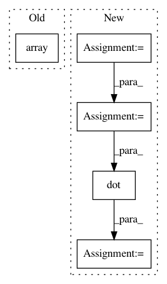

6bc1b4730644ae4dba5d931387fe9de8b1140a6c,examples/plot_pole_ladder_s2.py,,main,#,23
Before Change
base_point = gs.to_ndarray(base_point, to_ndim=2)
origin = gs.concatenate(
[base_point, base_point, final_geodesic(gs.array([0.]))], axis=1)
ax.quiver(
origin[:, 0], origin[:, 1], origin[:, 2],
After Change
tangent_vec_b = SPACE.to_tangent(tangent_vec_b, base_point)
tangent_vec_b = tangent_vec_b / gs.linalg.norm(tangent_vec_b)
rotation_vector = gs.pi / 2 * base_point
rotation_matrix = ROTATIONS.matrix_from_rotation_vector(rotation_vector)
tangent_vec_a = gs.dot(rotation_matrix, tangent_vec_b)
tangent_vec_b *= 3. / 2.
ladder = METRIC.ladder_parallel_transport(
tangent_vec_a,
In pattern: SUPERPATTERN
Frequency: 4
Non-data size: 5
Instances
Project Name: geomstats/geomstats
Commit Name: 6bc1b4730644ae4dba5d931387fe9de8b1140a6c
Time: 2020-05-09
Author: nicolas.guigui@inria.fr
File Name: examples/plot_pole_ladder_s2.py
Class Name:
Method Name: main
Project Name: tensorly/tensorly
Commit Name: 8c271d54da8f609c9b56e9d0ab98d453b3e4f81c
Time: 2021-03-08
Author: taylorpatti@g.harvard.edu
File Name: tensorly/metrics/tests/test_entropy.py
Class Name:
Method Name: test_vonNeumann_entropy_pure_state
Project Name: tensorly/tensorly
Commit Name: 8c271d54da8f609c9b56e9d0ab98d453b3e4f81c
Time: 2021-03-08
Author: taylorpatti@g.harvard.edu
File Name: tensorly/metrics/tests/test_entropy.py
Class Name:
Method Name: test_vonNeumann_entropy_pure_state_CP
Project Name: nipy/dipy
Commit Name: 186ae52fe58fa5f2ed3423e4e18e8638d7c7300e
Time: 2016-09-29
Author: Kesshi.Jordan@ucsf.edu
File Name: dipy/tracking/tests/test_utils.py
Class Name:
Method Name: test_get_flexi_tvis_affine